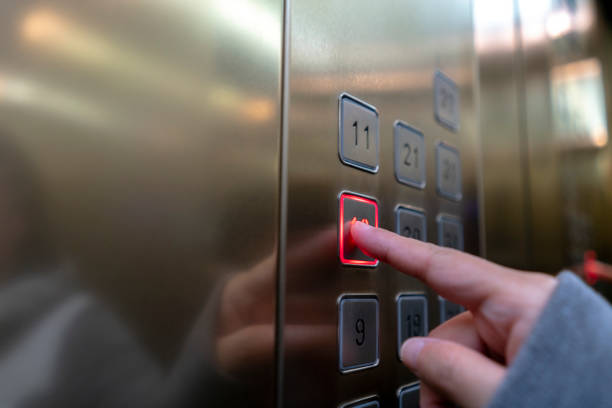

新聞中心 > 常用消毒殺菌產品介紹
防疫預防及清潔注意事項

酒精噴灑有技巧，噴不好恐致「肺部纖維化」！毒理專家示警2關鍵很要命，6大疾病風險大增
內容摘要： 美國毒理專家、中原大學生物科技學系副教授招名威：少量吸入是不會有太大影響，因為酒精會揮發，如果是漂白水、次氯酸水這種消毒劑，吸太多了更可能長期留在肺部，惹來中毒風險。
防疫猛用清潔劑 美國今年中毒案例成長2成 醫說混用清潔劑最危險
內容摘要： 美國自從1月19日第一起新冠肺炎病例確診後，疫情一發不可收拾，美國CDC建議民眾適當清潔並且消毒高接觸表面，卻迎來前所未有的消毒劑和清潔劑中毒案件。在這份報告中指出，去年和今年相較，今年電話諮詢需求在清潔劑類中，漂白劑有1,949例，佔了62.1％最多。吸入性中毒案例增幅最高，從去年的4,713件增加到6,379件，發生率增加了35.3％。而5歲以下兒童最容易誤用化學藥品。
酒精消毒要抹開嗎？怎樣噴更有效消毒？專家：2重點才是最佳解
內容摘要： 美國國家衛生研究院資料表示，最頻繁接觸的地方就是消毒重要區，像是門把、桌椅、扶手、（電燈）開關、水龍頭等。 招名威表示，酒精消毒的原則在時間和充足度。因為酒精會隨著時間揮發，且在噴灑的當下就有效力，對著物品、手部噴灑才是消滅病毒的最佳解法；若是先噴再抹開，比如餐桌清潔消毒，則要注意範圍大小，因為酒精雖然能被帶到其他位置，增加消毒面積，但範圍太大的話，酒精也會更容易揮發而失去效益。此外，酒精噴手再搓揉，也要注意噴灑分量的充足和均勻性才能有效消毒手部，但要記得避開眼睛、有傷口處的部位以及唇邊皮膚的位置。
噴完酒精再擦掉會「沒效」！公共衛生專家：最好的消毒要遵守3步驟
內容摘要： 美國疾病預防及控制中心（CDC）建議，消毒完之後就最好不要擦掉，可以讓環境通風，讓氣味自行散去；而台灣衛福部則建議，如果擔心小孩去舔消毒後的玩具、家具，或是擔心自己碰到這些消毒後的物品而沾染漂白水或酒精，至少等待效果開始出現，再用清水擦拭。 使用酒精擦拭後，至少靜置15秒，如果是比較大表面的消毒，建議要放置20分鐘。 使用漂白水擦拭後，至少靜置 5～10 分鐘，如果是浸泡消毒，建議要超過30分鐘。